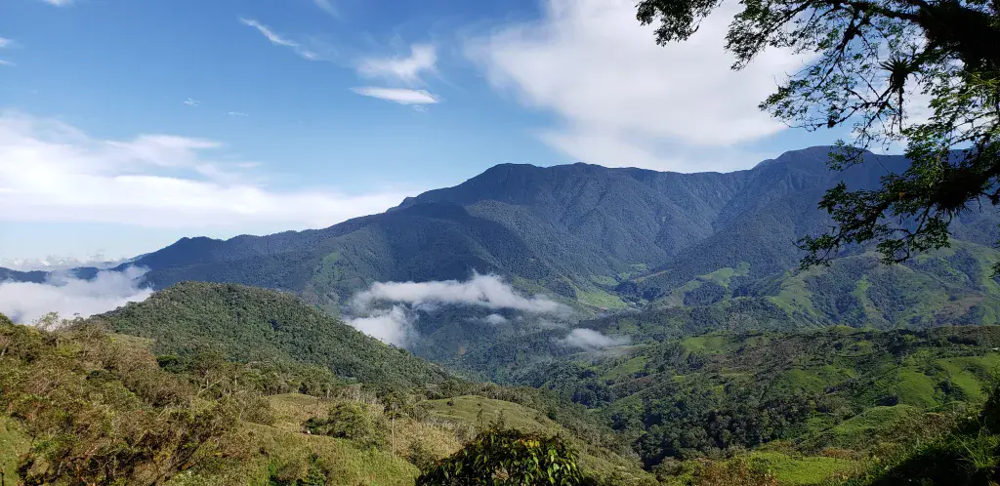
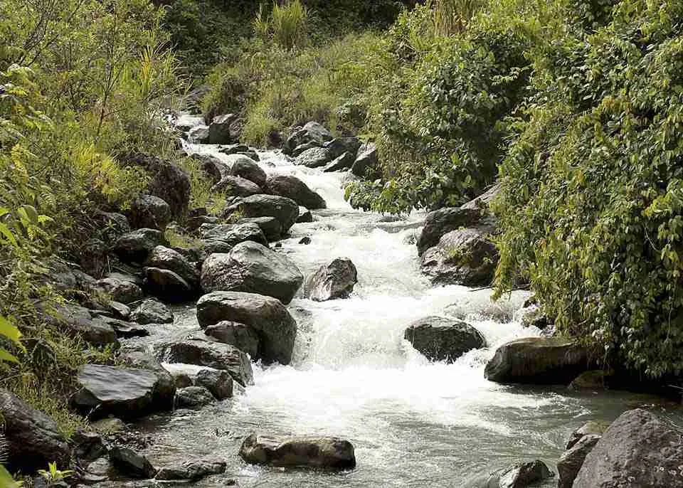
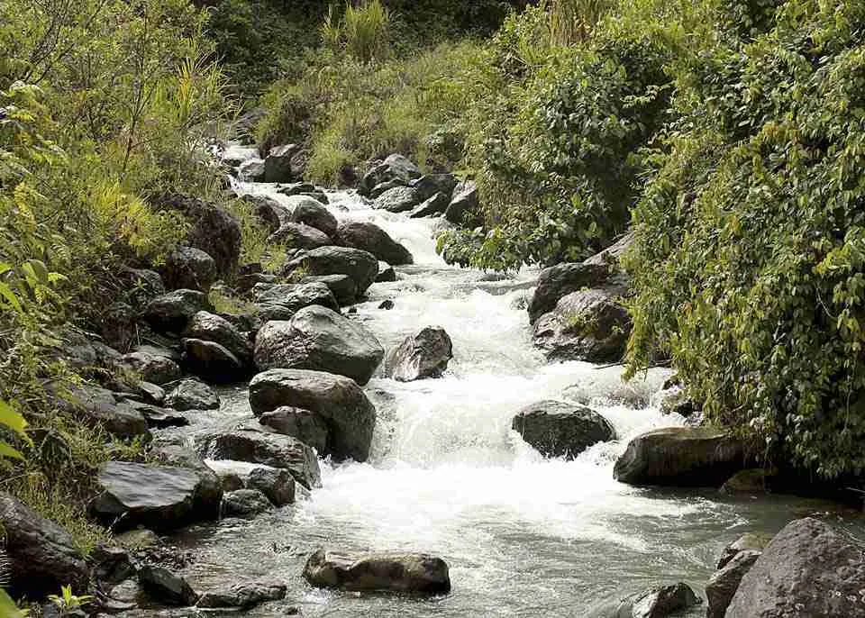
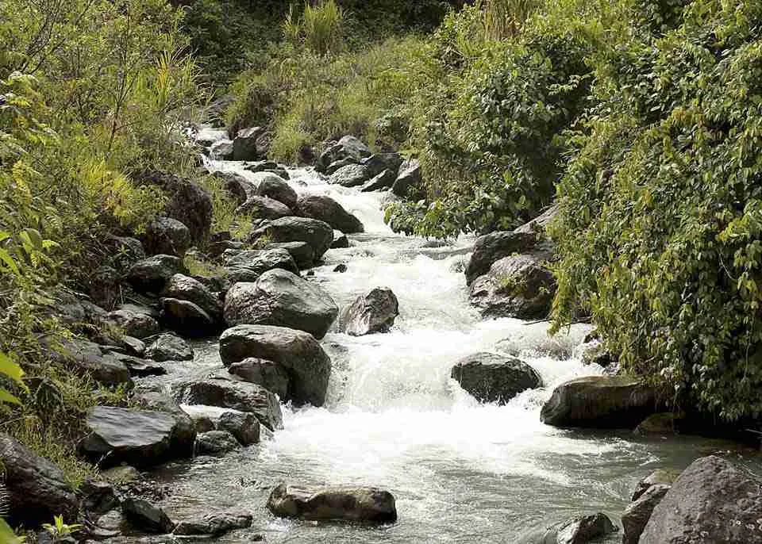

Parque Regional Natural Cuchilla de San Juan
Belén de Umbría, Risaralda


 


Descripción
El Parque Regional Natural Cuchilla de San Juan es un área protegida que alberga una rica biodiversidad y ecosistemas únicos. Ofrece impresionantes vistas panorámicas, senderos para caminatas ecológicas y es hogar de numerosas especies de flora y fauna nativas.
Características
- 🏔️ Paisaje montañoso
- 🌿 Biodiversidad única
- 🦜 Avistamiento de aves
- 🚶♂️ Senderos ecológicos
- 🌳 Bosque nativo
- 📸 Miradores panorámicos
- 💧 Fuentes hídricas
Horarios y Precios
Horario:
6:00 AM - 5:00 PM
Días:
Todos los días (con permiso previo)
Nota importante:
Se requiere guía certificado
Aviso Importante
Por ser un área protegida, no hay servicios de restaurante dentro del parque ni en sus inmediaciones. Se recomienda llevar provisiones y agua suficiente para la visita.
Alojamientos cercanos
-
Hotel Belén Plaza
- Ubicación: Centro de Belén de Umbría
- Habitaciones cómodas
- Servicio personalizado
-
Finca Hotel La Cuchilla
- Ubicación: Afueras de Belén de Umbría
- Entorno natural
- Ideal para senderismo
-
Hostal El Mirador
- Ubicación: Mistrató
- Vistas panorámicas
- Experiencia acogedora
-
Eco Hotel Monteverde
- Ubicación: Apía
- Alojamientos ecológicos
- Servicios de guías disponibles
-
Hotel Campestre Pueblo Rico
- Ubicación: Pueblo Rico
- Precios accesibles
- Habitaciones cómodas
Recomendaciones
- 🎒 Llevar suficiente agua y alimentos
- 🧥 Ropa adecuada para clima variable
- 📝 Tramitar permisos con anticipación
- 🦺 Contratar guía certificado
- 📱 Llevar equipo de comunicación